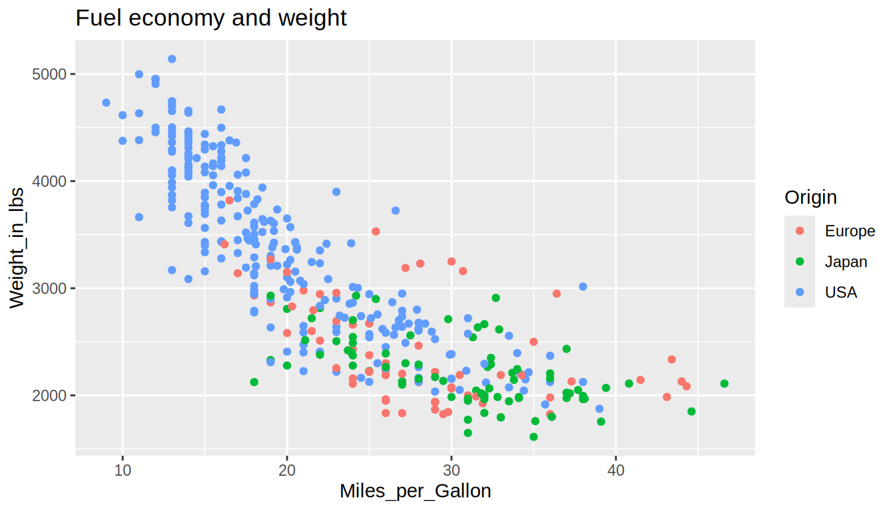
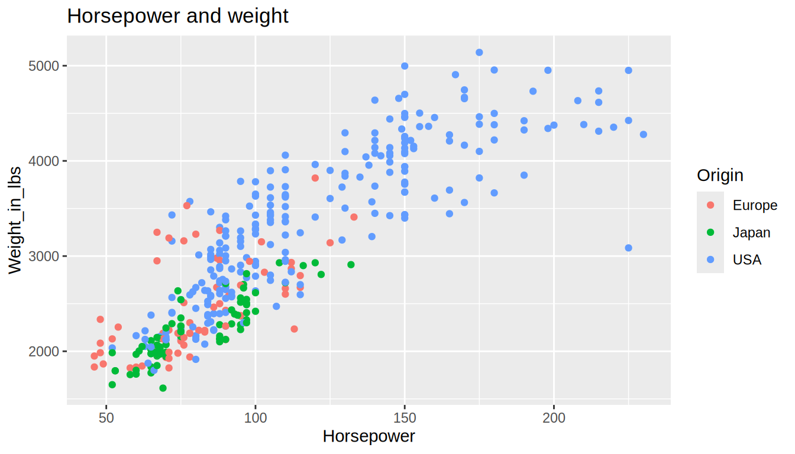
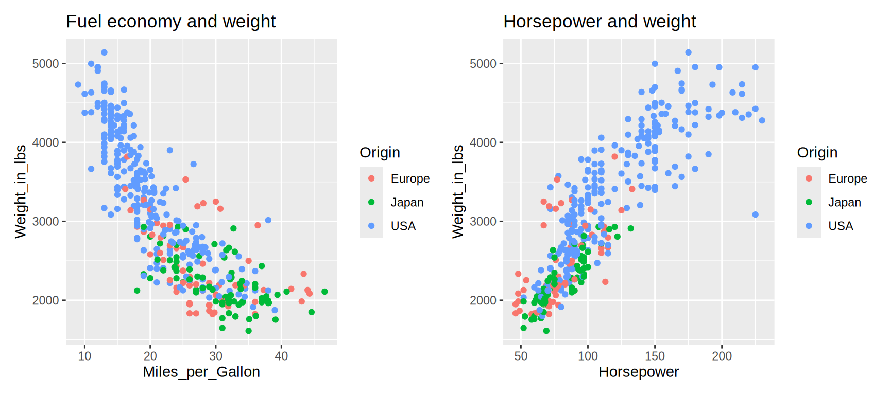
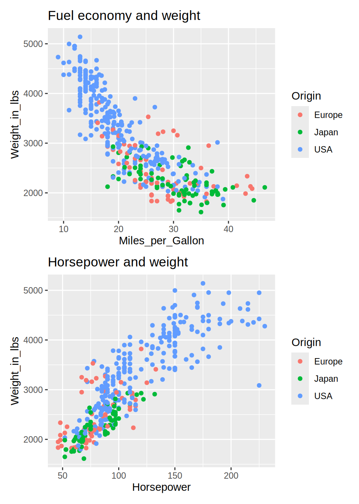
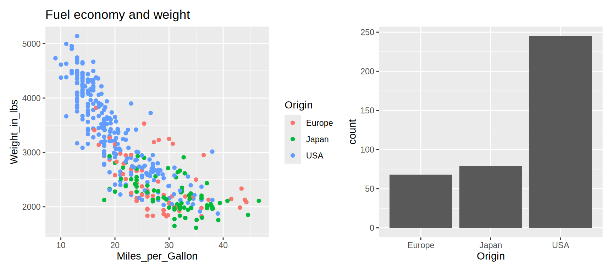
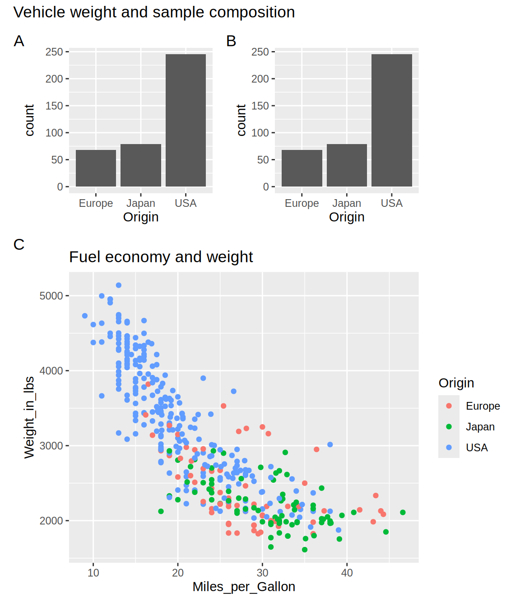

import altair as alt
import pandas as pd
cars = pd.read_csv('data/vega-cars.csv').dropna(
subset=['Miles_per_Gallon', 'Horsepower', 'Weight_in_lbs', 'Origin']
)
mpg_weight = alt.Chart(cars, title='Fuel economy and weight').mark_point().encode(
x='Miles_per_Gallon:Q', y='Weight_in_lbs:Q', color='Origin:N'
)
hp_weight = alt.Chart(cars, title='Horsepower and weight').mark_point().encode(
x='Horsepower:Q', y='Weight_in_lbs:Q', color='Origin:N'
)
mpg_weight18 Figure composition and saving
18.1 Why bother?
Combining complementary views can show a relationship alongside its distributions, or let readers compare how the same response relates to different predictors.
After composing a figure, we also need to choose how to share it. We introduce the export workflow here, then develop the interactions themselves in Interactivity.
18.2 Preparing complementary panels
We will reuse the cars dataset. We keep observations with recorded fuel economy, horsepower, and weight so that both panels show the same cars. Here, weight stays on the y-axis. The short titles identify panels while we experiment with layouts; for a communication figure, a title explaining the message may be more useful.
hp_weightlibrary(tidyverse)
library(patchwork)
cars <- read_csv('data/vega-cars.csv') |>
drop_na(Miles_per_Gallon, Horsepower, Weight_in_lbs, Origin)
mpg_weight <- ggplot(cars, aes(x = Miles_per_Gallon, y = Weight_in_lbs, color = Origin)) +
geom_point() + labs(title = 'Fuel economy and weight')
hp_weight <- ggplot(cars, aes(x = Horsepower, y = Weight_in_lbs, color = Origin)) +
geom_point() + labs(title = 'Horsepower and weight')
mpg_weight
hp_weight
18.3 Arranging panels horizontally and vertically
Side-by-side panels
Use the pipe operator, |, for horizontal concatenation. Set the dimensions of the individual panels before composing them. Here the two x-axes represent different measurements, but the y-axis represents weight in both panels, so we explicitly share its scale.
mpg_weight = mpg_weight.properties(width=250, height=220)
hp_weight = hp_weight.properties(width=250, height=220)
(mpg_weight | hp_weight).resolve_scale(y='shared')patchwork composes ggplot objects with layout operators. As in Altair, | places panels side by side.
mpg_weight | hp_weight
Patchwork aligns panel geometry automatically, but each ggplot retains its own scales. These panels use the same cars and y-variable, so their default y-ranges agree. When data or scale settings differ, specify common limits if direct comparison requires them.
Stacked panels
Use & for vertical concatenation.
mpg_weight & hp_weightUse / to stack panels vertically. This differs from Altair’s & operator.
mpg_weight / hp_weight
In patchwork, & instead applies a setting to every panel. For example, (mpg_weight / hp_weight) & theme(legend.position = 'none') hides both legends.
Overall titles and panel labels
Parentheses make it clear that properties() applies to the composed figure, not just the second panel.
(mpg_weight | hp_weight).properties(title='Two views of vehicle weight')The functions alt.hconcat() and alt.vconcat() are alternatives to | and &. For example, the following also adds an overall title:
alt.hconcat(mpg_weight, hp_weight, title='Two views of vehicle weight')plot_annotation(tag_levels = 'A') adds automatic panel tags A, B, and so on. Use tag_levels = list(c('A', 'B')) to supply an explicit sequence of tags.
(mpg_weight | hp_weight) + plot_annotation(tag_levels = 'A')
The same function adds an overall title to the composed figure. Here we also collect the matching legends into a single guide.
(mpg_weight | hp_weight) +
plot_layout(guides = 'collect') +
plot_annotation(
title = 'Two views of vehicle weight',
tag_levels = 'A',
theme = theme(plot.title = element_text(face = 'bold'))
)
guides = 'collect' consolidates matching legends. It does not make different color scales equivalent, so check that shared colors retain the same meaning.
18.4 Unequal widths and nested layouts
A scatterplot may need a wide plotting area, while a categorical count chart can remain readable in a narrower panel.
A short histogram can show the distribution of fuel economy, and a narrow strip of ticks can show weights within each origin.
mpg_hist = alt.Chart(cars).mark_bar().encode(
x=alt.X('Miles_per_Gallon:Q').bin(), y='count()'
).properties(width=250, height=80)
mpg_histweight_ticks = alt.Chart(cars).mark_tick().encode(
x='Origin:N', y='Weight_in_lbs:Q', color='Origin:N'
).properties(width=90, height=220)
mpg_weight | weight_ticksCombining operators without parentheses may produce a different arrangement than intended. Python evaluates & before |, so this puts the histogram above the scatterplot and then places the tick plot alongside that entire column:
mpg_hist & mpg_weight | weight_ticksParentheses can instead group the scatterplot and ticks into the bottom row:
mpg_hist & (mpg_weight | weight_ticks)Check which axes should align when arranging marginal distributions. The histogram’s x-variable matches the scatterplot’s x-variable, and the tick plot’s y-variable matches the scatterplot’s y-variable. Sharing a variable does not make every possible arrangement equally easy to read.
First create a count chart of origins. This is a categorical summary of the same cars, rather than a marginal distribution of either scatterplot axis.
origin_count <- ggplot(cars, aes(x = Origin)) + geom_bar()
origin_count
An equally wide panel can give a three-category count chart more space than it needs. plot_layout(widths = c(3, 1)) allocates three times as much panel width to the scatterplot. Axes, titles, and legends need additional space, so the full plot widths need not have exactly that ratio.
mpg_weight | origin_count
(mpg_weight | origin_count) + plot_layout(widths = c(3, 1))
Here the scatterplot legend falls between the panels. Reordering them keeps that legend at the outside edge:
(origin_count | mpg_weight) + plot_layout(widths = c(1, 3))
We can also nest layouts with parentheses and control the relative heights of rows. This deliberately repeats the count plot to make the layout structure easy to see. Automatic tags continue through the nested panels.
top_row <- origin_count | origin_count
nested_figure <- (top_row / mpg_weight) +
plot_layout(heights = c(1, 2)) +
plot_annotation(title = 'Vehicle weight and sample composition', tag_levels = 'A')
nested_figure
18.5 Choosing an output format
18.6 Saving static figures
The following save commands are intended to be run when you want to create files; they are not executed automatically while rendering this chapter.
The filename extension selects the output format. PNG, SVG, and PDF export use vl-convert-python, included in the textbook environment through Altair’s optional dependencies.
mpg_weight.save('mpg_weight.png')
mpg_weight.save('mpg_weight.svg')
mpg_weight.save('mpg_weight.pdf')scale_factor scales the exported image dimensions. For example, this produces three times as many pixels along each dimension of a PNG:
mpg_weight.save('mpg_weight-hires.png', scale_factor=3)Altair also offers ppi for specifying PNG pixel density. The chart’s width and height determine its layout; exporting more pixels does not automatically make small labels proportionally larger within the figure.
mpg_weight.save('mpg_weight-print.png', ppi=300)
mpg_weight.save('mpg_weight.json')ggsave() can save the most recent plot when its plot argument is omitted. Passing the object explicitly avoids accidentally exporting a different plot. Specify physical size and pixel density when preparing a raster image.
ggsave('mpg_weight-r.png', plot = mpg_weight, width = 6, height = 4, units = 'in', dpi = 300)At six by four inches, 300 dpi produces a 1,800 by 1,200 pixel image. Using 96 dpi at the same size gives fewer pixels, not a higher-resolution image. Vector formats do not use dpi to determine the resolution of their vector elements. SVG export uses the svglite package.
ggsave('mpg_weight-r.pdf', plot = mpg_weight, width = 6, height = 4)
ggsave('mpg_weight-r.svg', plot = mpg_weight, width = 6, height = 4)The plot argument can also be a composed patchwork figure:
ggsave('vehicle-layout.svg', plot = nested_figure, width = 6, height = 7)18.8 Notebook display formats and static previews
GitHub’s notebook viewer does not run arbitrary interactive JavaScript, so a chart that works in JupyterLab may need a static fallback there.
In a compatible Jupyter frontend, Altair’s MIME renderer supplies a Vega-Lite representation that the frontend can render and may save with a PNG fallback:
alt.renderers.enable('mimetype')Run the plotting cells again and save the notebook so the outputs are stored. The frontend must support the chart’s Vega-Lite version; the Python MIME bundle alone does not guarantee that a PNG has been stored. For an explicitly static notebook output, use the PNG renderer instead:
alt.renderers.enable('png')
mpg_weightReturn to interactive HTML display with alt.renderers.enable('default'). A PNG fallback is a static preview; sharing the HTML export preserves interactive exploration. Notebook display settings and exported-file formats are separate choices.